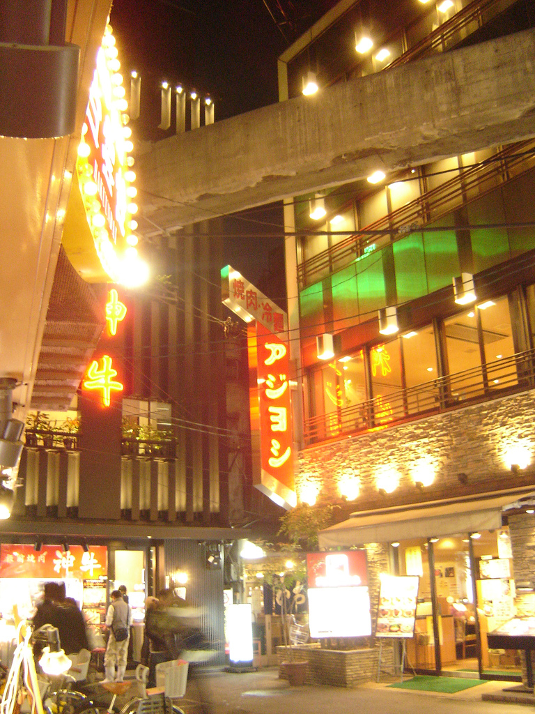
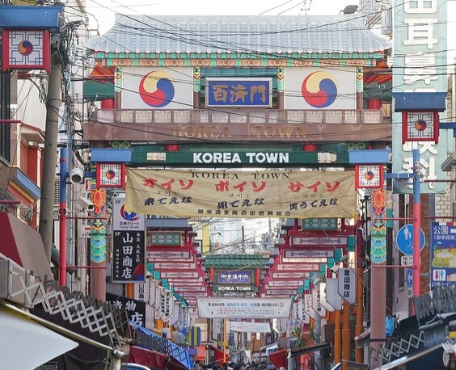
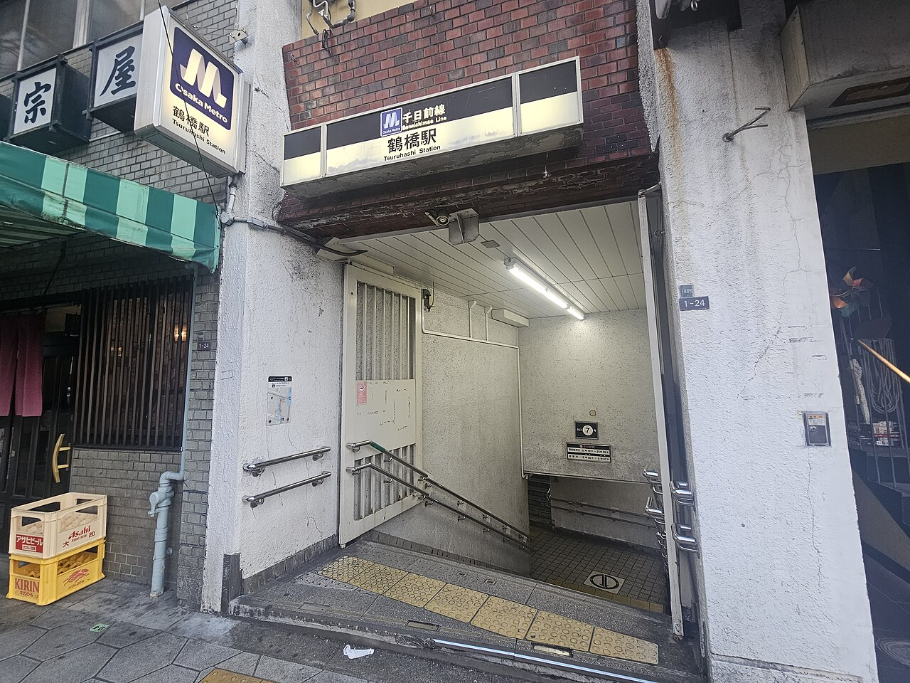

已预订 · 9/29–10/2
img').src=this.src">

img').src=this.src">
img').src=this.src">HOME BASE · 大阪第一段住宿
Zenith's House · 东成区 / 鹤桥
已订好：9/29–10/2 三晚。Airbnb 上的整栋两层独立屋，位置在大阪东成区、靠近鹤桥站：4 间独立卧室（3 张双人床 + 1 间日式床垫）、2 个卫生间、厨房、洗衣机、浴缸，最多住 8 人，5 个人住得很宽松；密码钥匙盒自助入住。房东 Olina 是超赞房东，会说中文。鹤桥站有近铁/JR/大阪地下鉄多线交会，去难波、新大阪、关西机场换乘都方便；车站周边就是大阪最有名的鹤桥韩国城，泡菜、经典烤肉、韩式食材店密集，住这一带买菜吃饭都方便。10/2 退房去东京：房东说大件行李可以带走也可以代为保管，建议交给房东保管（见下面「行李怎么办」）。去 USJ 也方便：鹤桥站坐 JR 大阪环状线到西九条站，同站台换乘 JR 夢咲線（ゆめ咲線）直达ユニバーサルシティ（USJ）站，不用出站、全程一次换乘，约 30 分钟、¥240；早上还有不少直通车连换乘都不用（见下面「鹤桥 JR 路线速查」）。